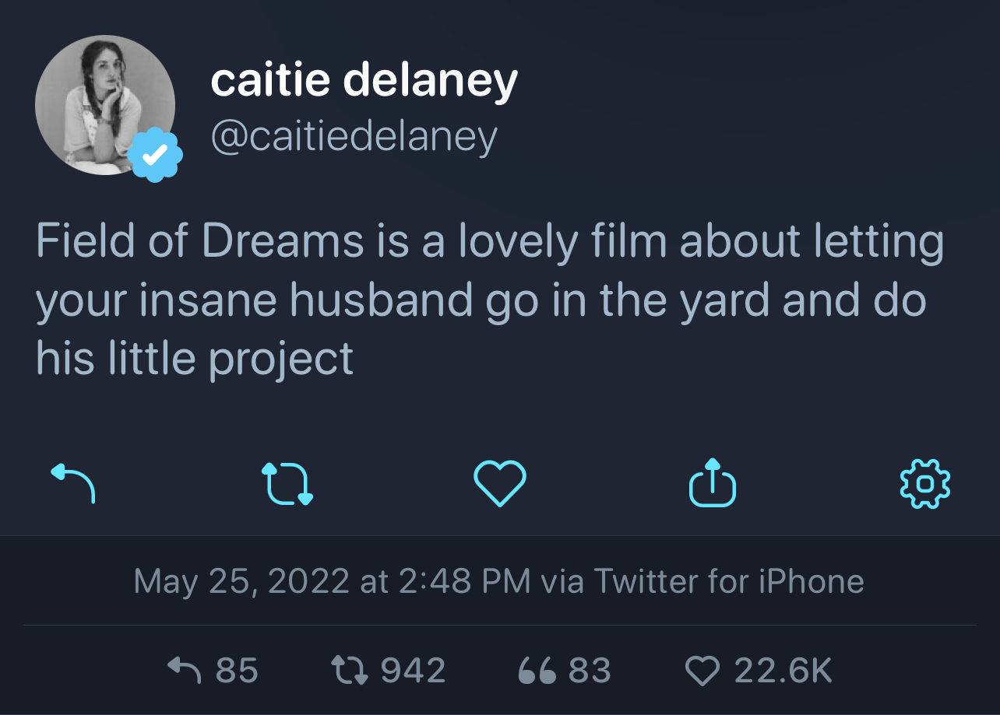
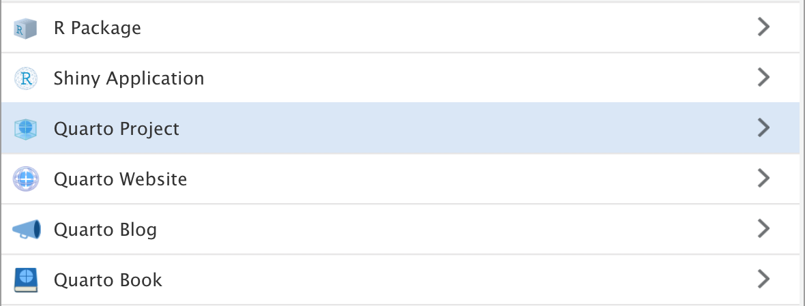

Motivation and thoughts
I spent a decent amount of time working on rebuilding my site with Quarto but the decision of should I rebuild my website was pretty impulsive. It’s not the first time I’ve hastily moved to a shiny new static site generator. Before that I was using Pelican and before that, Jykell; I suppose I love the process of trying to design something new and see how I can take advantage of something new to make it even easier to blog!
I was going to make a joke about Field of Dreams and how I built it and the blog posts didn’t come. But that’s not the important part! The important part was that I went in the world wide web version of the yard to do my little project.

What this post will not be is a complete end-to-end guide on building a website with Quarto. I think there are already a lot of great pieces of content and the docs are really well put together. I don’t want to just rehash what already exists. I thought it might be helpful to just document how I went about taking some things from the Quarto website and editing/altering for myself and really just focus on some of the aspects of using Quarto that were not initially clear and required some patience to work through.
I’m by no means a front-end professional and a lot of what I’ve discovered putting this site together was from reading the docs, looking for examples, and trying things out. If you notice something that isn’t right; feel free to create an issue on the repo. Thanks!
Quarto, how to start?
So we have four different options above. When inspecting the plain text within the .Rproj file itself (something like vim name.Rproj), there isn’t any magic happening under the hood in connection to Quarto. However, each of these options correspond to different commands that you could also run via the cli. Remember, Quarto is a tool that is built on top of and extends Pandoc, which also is a cli, so don’t be afraid to run things that way too. Initially I thought that if I decided to do a Quarto Website instead of a Quarto Blog I’d be locked into something and that is not the case at all! So don’t worry too much at this stage.

If you want to examine Quarto’s source code on GitHub, it’s under quarto-cli. If you want to see the source code for the Quarto website itself, it’s under quarto-web. So if there’s something you see on the main website that you like, check the GitHub repo to see how they’re doing it.
Building blocks
As an example, I borrowed a design pattern from the index.qmd file from Quarto’s landing page for my landing page; here’s the original:
::: {.content-block}
::: {.features}
::: {.feature}
### Dynamic Documents
Generate dynamic output using Python, R, Julia, and Observable.
Create reproducible documents that can be regenerated when
underlying assumptions or data change.
::: {.learn-more}
[Learn more »](docs/computations/python.qmd)
:::
:::
::: {.feature}
### Beautiful Publications
Publish high-quality articles, reports, presentations,
websites, and books in HTML, PDF, MS Word, ePub, and
more. Use a single source document to target multiple
formats.
::: {.learn-more}
[Learn more »](docs/output-formats/all-formats.qmd)
:::
:::
::: {.feature}
### Scientific Markdown
Pandoc markdown has excellent support for LaTeX equations
and citations. Quarto adds extensions for cross-references,
figure panels, callouts, advanced page layout, and more.
::: {.learn-more}
[Learn more »](docs/authoring/markdown-basics.qmd)
:::
:::
::: {.feature}
### Authoring Tools
Use your favorite tools including VS Code, RStudio,
Jupyter Lab, or any text editor. Use the Quarto visual
markdown editor for long-form documents.
::: {.learn-more}
[Learn more »](docs/tools/jupyter-lab.qmd)
:::
:::
::: {.feature}
### Interactivity
Engage readers by adding interactive data exploration
to your documents using Jupyter Widgets, htmlwidgets for
R, Observable JS, and Shiny.
::: {.learn-more}
[Learn more »](docs/interactive/)
:::
:::
::: {.feature}
### Websites and Books
Publish collections of documents as a blog or full
website. Create books and manuscripts in both print
formats (PDF and MS Word) and online formats (HTML
and ePub).
::: {.learn-more}
[Learn more »](docs/websites/)
:::
:::
:::
:::<div>s and <span>s
First, let’s talk about what’s going on here. If you’re new to this syntax of ::: {.some-class} ::: then take a bit of time to read the Quarto docs on divs and spans to gain a good foundation. In Pandoc these are called fenced divs.
Once you understand the syntax, it might not be apparent at first, but these fenced divs are extraordinarily flexible! Let’s break down the above code chunk:
The ::: {.content-block}::: is a <div> defining the padding for the top and bottom and the margin for the left and the right; here is the CSS from index.css:
This creates space on the page for the two main components:
The container
::: {.features} :::
Similarly to the .content-block, this is like a row for the other content elements. On the Bootstrap 5 [page] you’ll see lots of examples of something like container -> row -> col.
The flexbox
::: {.feature} :::
These are the individual elements of content. They’re like post-its with info on them. Each .feature is contained within the .features container.
You can think of the .container like a board you want to hang on the wall–the .features is like a sticky adhesive and the .feature the squares with notes on them that you stick to your board.
From the docs, Bootstrap 5 uses a mobile-first flexbox grid to build layouts of all shapes and sizes thanks to a twelve column system, six default responsive tiers, Sass variables and mixins, and dozens of predefined classes. It can definitely be confusing if you haven’t ever written HTML before, so don’t worry if it isn’t clicking right away. Learning more about Bootstrap 5 will only enhance your Quarto experience if you’re interested. The better you understand the grid the more flexible you will be when thinking of how you want to arrange components on your site and what is available to you as ways to do that.
So how did I alter the example?
What I liked was the ability to just create a simple grid for some content–but I also wanted to have a button and I wanted those buttons to line up. So this was my way to make that happen:
::: {.content-block}
::: {.features}
::: {.feature}
::: {.feature-top}
### Blog
Latest from the blog
::: {#listing-blog}
:::
:::
::: {.feature-bottom}
[Blog](blog.qmd){.btn .btn-secondary role="button"}
:::
:::
::: {.feature}
::: {.feature-top}
### Talks
Latest talk I've done
::: {#listing-talks}
:::
:::
::: {.feature-bottom}
[Talks](talks.qmd){.btn .btn-secondary role="button"}
:::
:::
::: {.feature}
::: {.feature-top}
### Projects
Latest tinkering
::: {#listing-projects}
:::
:::
::: {.feature-bottom}
[Projects](projects.qmd){.btn .btn-secondary role="button"}
:::
:::
:::
:::You’ll notice some new things here; a couple of new classes and some document listings. Let’s start with the new classes first and then talk about the document listings.
To turn a regular link into a button you can add a helpful Bootstrap 5 class to the link: .btn and then adding the role="button"! So simple and it looks really nice too. I’m also using .btn-secondary to use the secondary color specified in the Sass file to make it pop
New classes
The .content-block has not changed. So we don’t need to focus on that. There is a new addition to the .features class’ CSS though:
So what is this height: calc(100% + 250px); doing? Well, it’s saying, whatever 100% of the height is for this normally, add an additional 250 pixels. Why we want to do this will become apparent with the next two classes:
The goal is to have the .feature divisible by two but in a way that allows for the bottom portion to align across .features rather than have the button in different positions based on the length of the document being highlighted by the document listing.
Now, this may not be the best solution–I imagine that for someone that is an experienced front-end dev or someone that knows Lua could potentially do something much more elegant. This seemed to me to be the best way to accomplish this for myself. I see the buttons align and that makes me happy
Document listings
I linked it earlier but ICYMI, document listings are something very new to me via Quarto. Read the docs on document listings first to gain a bit more familiarity and then I’ll explain what I’m doing here.
My index.qmd is using multiple custom listings. Make sure to read the docs to get a feel for what’s different between altering/editing the available document listing vs creating a custom listing.
EJS
The custom listings are written in Embedded JavaScript templating (EJS), which was very confusing for me. I’ll try to share what limited clarity I’ve been able to obtain but if this isn’t something you’ll want to do you can feel free to skip.
I followed the example from quarto-web and created an ejs directory and then put my custom listing .ejs file in that directory. Before threading everything together, let’s just look at how the custom listing is working:
<!-- attributes for item -->
<!-- freeze,
title-block-banner,
title,
author,
date,
categories,
image,
path,
image-alt,
description,
filename,
file-modified,
reading-time,
sortableValues -->
<% for (const item of items.slice(0, 1)) { %>
<h4><a href="<%- item.path %>"><%= item.title %></a></h4>
<small> <%= item.date %></small>
<% } %> First, please excuse the low quality but high effort JavaScript. Second, notice the comment I added for the attributes available to us through the initial for loop. I wanted to keep these readily available in the event I need to create some other custom listing. Based on what it is you want to highlight you can change or alter this to see if it works for your purposes as well. What I wanted was just the most recent listing from a document list, so I only want one listing. That is the purpose of the .slice(0, 1) method. The goal is to not have to update the index.qmd ever–even when there are new blog posts, talks, or projects. I’m slicing this list for the very first (most recent) listing and just grabbing a minimal amount of attributes: its location, the title, and the date.
Connecting it all together
To connect the custom listing you’ll need to add it in your .qmd file’s YAML header. Here’s an example from my index.qmd:
---
title: ""
page-layout: full
title-block-banner: true
listing:
- id: listing-blog
contents: "blog/"
template: /ejs/most-recent-only.ejs
sort: "date desc"
- id: listing-talks
contents: "talks/"
template: /ejs/most-recent-only.ejs
sort: "date desc"
- id: listing-projects
contents: "projects/"
template: /ejs/most-recent-only.ejs
sort: "date desc"
---What this is saying is that Quarto will create an ID that can be used to know where on the page to have this listing display its listing and how to sort the listing. By setting sort: "date desc" in conjunction with the .slice method in the EJS template, that is how we’re able to get the most recent piece of content from these three categories.
Then it’s as simple as adding the ID you specified in the YAML in a <div>, e.g.:
It took me a little bit of time to get a feel for how this all comes together so I’d recommend playing around with this a bit to build an intuition.
Conclusion
I think this is probably a good place to end things. There is obviously more I could cover in connection to publishing, custom domains, etc, but as I mentioned at the outset–I just wanted to sort of focus on the parts that were exciting and new to me via Quarto. Feel free to get in touch with me if you have any questions or comments. Again, if something isn’t correct, feel free to create an issue on the repo.